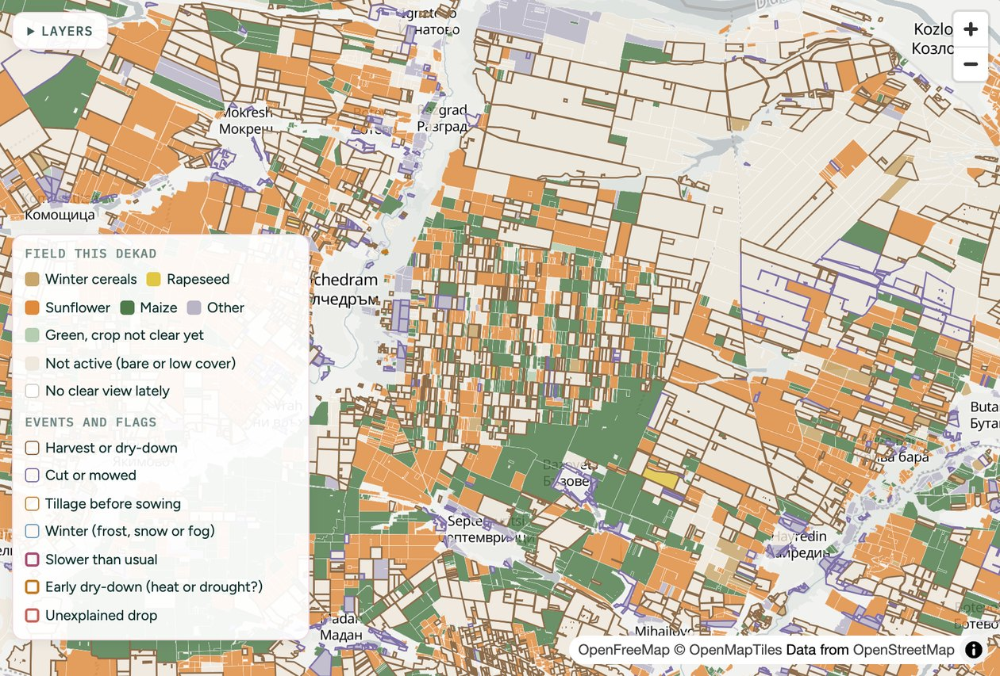

New · interactive · Danube plain, Bulgaria
Season’s Pulse
Every field's season, dekad by dekad. Follow 7,567 fields from spring 2025 through the whole 2026 season: what is growing, how it is doing against the region and against its own past, and when something looks off.
Built on Sentinel-2 and Landsat, with Sentinel-1 radar filling in through the clouds, and six years of parcel history behind every field.
Open Season’s Pulse →